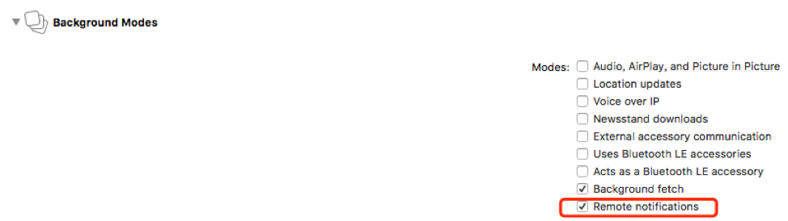

iOS10通知的新API,和两个通知的扩展:NSNotification Service/Content Extension新特性的使用.
iOS10推送基础
iOS10更新之后,推送的一些API和使用方法也发生了改变,相对简单的推送证书以及环境的配置就不在这里赘述了.
首先我们需要打开下边的开关,无论是选择苹果的APNS还是三方的推送服务,这个都是必须打开的.
注:这里需要在创建appId的时候开启推送服务.

打开上边开关后,系统会给我们生成一个entitlements(权限)文件:
可能产生的问题：将开发环境由 development 变成 production ,在开关这里会产生错误，如图：
iOS10 之前1 | { |
1 | { |
要想在后台做一些操作，需要在APNS增加字段："content-available":1,并且需要在app的Background Modes中勾选Remote notifications选项.

iOS10推送进阶
发起通知:下面以本地通知为例:
发起一个通知需要三个要素:
- 触发器
通知触发器类型分为三类:- 定时触发器UNTimeIntervalNotificationTrigger
- 周期(日历)触发器UNCalendarNotificationTrigger
- 位置触发器UNLocationNotificationTrigger
- 通知体
UN(Mutable)NotificationContent,它的属性有:
attachments //附件
badge //数字标志
title //推送内容标题
subtitle //推送内容子标题
body //推送内容body
categoryIdentifier //category标识，操作策略
launchImageName //点击通知进入应用的启动图
sound //声音
userInfo //附带通知内容 - 通知的请求
UNNotificationRequest, 它接收一个identifier,用于标识通知(用于通知合并等操作),一个content,还有一个触发器trigger.
1 | // 本地通知基础 |
下图是应用在前台时,收到通知后,通知弹起之前的代理方法(之前老的方法还是会调):
1 | // 弹通知之前的操作 只有在应用在前台时会调用 |
我们可以通过触发器的类型判断是远程推送还是本地推送.
1 | // 点开通知或者点击通知的Action会调用 |
点击/侧滑/点击action通知时,会走response的回调,同样可以区分是否是远程推送.
管理通知更新通知
创建一个UNNotificationRequest类的实例，一定要为它设置identifier, 在后面的查找，更新， 删除通知，这个标识是用来区分这个通知与其他通知的.
把request加到UNUserNotificationCenter， 并设置触发器，等待触发
如果另一个request具有和之前request相同的标识，不同的内容， 可以达到更新通知的目的.这里有一点需要注意,如果两个request的标识相同,并且在第一个通知尚未触发时发出第二个通知的请求,那么第一个通知将不会显示,直接显示第二条通知(将第一条覆盖了).
删除通知
调用UNUserNotificationCenter对应的方法,可以删除特定的通知:removePendingNotificationRequestsWithIdentifiers://删除特定等待递送的通知
removeAllPendingNotificationRequests://删除所有等待递送的通知
removeDeliveredNotificationsWithIdentifiers://删除特定已经递送的通知
removeAllDeliveredNotifications://删除已经递送的通知查找通知
这里只能获取所有的等待递送的通知和已经递送的通知,然后手动搜索特定的通知内容:1
2
3
4
5
6
7
8
9
10
11
12
13
14// 删除所有尚未发出的通知
UNUserNotificationCenter.current().removeAllPendingNotificationRequests()
// 删除所有已经发出的通知
UNUserNotificationCenter.current().removeAllDeliveredNotifications()
// 根据id移除已经发出的指定通知
UNUserNotificationCenter.current().removeDeliveredNotifications(withIdentifiers: ["haha"])
// 获取所有已经发出的通知
UNUserNotificationCenter.current().getDeliveredNotifications { (notice) in
print(notice)
}
// 获取所有尚未发出的通知
UNUserNotificationCenter.current().getPendingNotificationRequests { (notice) in
print(notice)
}
在UNNotificationContent类中，有个附件数组的属性，这就是包含UNNotificationAttachment类的数组了,可以包含音频，图像或视频内容，并且可以将其内容显示出来的通知。使用本地通知时，可以在通知创建时，将附件加入即可。对于远程通知，则必须实现使用UNNotificationServiceExtension类通知服务扩展。
1 | // Optional array of attachments. |
附件支持的类型和大小:
UNNotificationAttachmentOptionsTypeHintKey:
此键的值是一个包含描述文件的类型统一类型标识符（UTI）一个NSString.如果不提供该键，附件的文件扩展名来确定其类型，常用的类型标识符有kUTTypeImage,kUTTypeJPEG2000,kUTTypeTIFF,kUTTypePICT,kUTTypeGIF,kUTTypePNG,kUTTypeQuickTimeImage等(需要import MobileCoreServices)2UNNotificationAttachmentOptionsThumbnailHiddenKey:
是一个BOOL值，为true时候，缩略图将隐藏，默认为trueUNNotificationAttachmentOptionsThumbnailTimeKey:
一般影片附件会用到，指的是用影片中的某一秒来做这个缩略图UNNotificationAttachmentOptionsThumbnailClippingRectKey:
根据大图生成缩略图的策略,需要传入一个CGRect结构体,其x,y,width以及height分别对应大图的锚点和截取比例,画图举例:
UNNotificationServiceExtension(通知服务扩展)
APNs 优势与意义:安全
安全总是摆在第一位的，从iOS9开始，苹果鼓励我们使用更为安全的https协议可以看的出来，苹果公司是对安全很重视的一家公司，为什么在这里我会提到安全呢？是因为之前我们的推送内容，不管是通过第三方，还是通过苹果自带的通知处理，如果让有心人对数据做一次拦截，抓个包啥的，我们推送的内容就会完全暴露.（除非把所有的远程推送变成本地通知）通过此次这次增加的UNNotificationServiceExtension的类，便可以更好的帮助我们实现数据的加密。
它的原理便是在收到通知后的最多30s内(此时通知栏并没有通知)，你可以把你的通知内容，解密并处理后，再展示在用户的通知拦上。内容丰富
这次苹果新添加的附件通知，结合上通知拓展类，便可以给用户展现出一个有着丰富内容的通知.比如,一个小短片的某一秒的画面,又或者是配上一些小图片啊（通过服务器传来的Url）等方式来吸引用户，诱导用户点开你的通知，促使用户会使用你的App。
其实推送这个功能，虽然有的人会关闭，但是大部分的人还是开启的，灵活利用推送，会让你的程序拥有更多的可能。
创建一个target不解释:
这里有一个证书问题需要说一下:
Extension的BundleId是主工程BundleId.Extension名:
- 处理通知内容重写的方法:
1
2
3
4
5
6
7
8
9
10
11
12
13
14
15
16
17
18
19
20
21
22
23
24
25
26
27
28
29
30override func didReceive(_ request: UNNotificationRequest, withContentHandler contentHandler: @escaping (UNNotificationContent) -> Void) {
self.contentHandler = contentHandler
bestAttemptContent = (request.content.mutableCopy() as? UNMutableNotificationContent)
if let bestAttemptContent = bestAttemptContent {
// Modify the notification content here...
bestAttemptContent.title = "\(bestAttemptContent.title) [修改后的标题]" + "哈哈哈"
bestAttemptContent.subtitle = "\(bestAttemptContent.subtitle) [修改后的子标题]" + "哈哈哈"
//1. 下载
let url = URL(string: "http://img1.gtimg.com/sports/pics/hv1/194/44/2136/138904814.jpg")
let config = URLSessionConfiguration.default
let session = URLSession(configuration: config)
let path = NSSearchPathForDirectoriesInDomains(.libraryDirectory, .userDomainMask, true).first! + "download/image.jpg"
let task: URLSessionDataTask = session.dataTask(with: url!, completionHandler: { (data, response, error) in
if error != nil {
let image = UIImage(data: data!)
// 2. 存起来
try! UIImageJPEGRepresentation(image!, 1)!.write(to: URL(string: path)!, options: .atomic)
}
// 3. 生成附件
if let attach = try? UNNotificationAttachment(identifier: "remote", url: URL(string: path)!, options: nil) {
// 4. 设置附件
bestAttemptContent.attachments = [attach]
contentHandler(bestAttemptContent)
}
})
task.resume()
}
}
本地推送通知带附件，只需给content.attachments设置UNNotificationAttachment附件对象.
远程推送通知则需要实现 UNNotificationServiceExtension,在回调方法中设置 request.content.attachments属性，之后调用 contentHandler 方法即可,此时,由于远程通知无法携带附件,所以只能从手机内存取或者去下载,由于通知的不确定性,故后者(下载)的可能性更大.
- 处理超时的回调方法:
1
2
3
4
5
6
7override func serviceExtensionTimeWillExpire() {
// Called just before the extension will be terminated by the system.
// Use this as an opportunity to deliver your "best attempt" at modified content, otherwise the original push payload will be used.
if let contentHandler = contentHandler, let bestAttemptContent = bestAttemptContent {
contentHandler(bestAttemptContent)
}
}
当上述方法处理通知超时(30s),则会调用这个方法,这里是我们最后修改通知内容的机会.
UNNotificationContentExtension(通知内容扩展)
简介:简单来说，UNNotificationContentExtension这个类，也是iOS10推送的新特性，官方文档用这么一句话，简单的解释了一下,Presents a custom interface for a delivered local or remote notification.（当你收到远程或者本地通知的时候，弹出一个自定义界面）.
注: 此自定义的界面并不能接收点击事件(除音视频的播放按钮)
创建的方法也是Target的方式,同NotificationServiceExtension,这里需要重点关注一下他生成的plist文件, 见下图:
UNNotificationExtensionCategory.(Required)
解释：对应这个key的值，可以是一个字符串，也可以是一个数组，每一个字符串都是一个identifier，这个identifier对应着每一个UNMutableNotificationContent的categoryIdentifier的属性。
简单来说，就是在收到通知的时候，我们可以让服务器把这个通知的categoryIdentifier带上，作用是，我们可以根据视频，音乐，图片，来分别自定义我们的通知内容。不同的分类标识符，也会在我们讲到UNNotificationAction的时候，帮助我们区分是什么类型的通知，方便我们对不同类型的通知做出不同的操作行为。UNNotificationExtensionInitialContentSizeRatio.(Required)
解释：这个值的类型是一个浮点类型，代表的是高度与宽度的比值。系统会使用这个比值，作为初始化view的大小。举个简单的例子来说，如果该值为1，则该视图为正方形。如果为0.5，则代表高度是宽度的一半。
注意这个值只是初始化的一个值，在这个扩展添加后，可以重写frame，展示的时候，在我们还没打开这个视图预览时，背景是个类似图片占位的灰色，那个灰色的高度宽度之比，就是通过这个值来设定。UNNotificationExtensionDefaultContentHidden.(Optional)
解释：这个值是一个BOOL值，当为YES时，会隐藏上方原本推送的内容视图，只会显示我们自定义的视图。（因为在自定义视图的时候，我们可以取得推送内容，然后按照我们想要的布局，展示出来）如果为NO时（默认为NO），推送视图就会既有我们的自定义视图，也会有系统原本的推送内容视图（这里附件是不会显示的，只会显示body里面的文字哟）NSExtensionMainStoryboard以及NSExtensionPointIdentifier，系统默认生成，直接用就好，如果需要更改的，只能更改使用的storyboard的名字
每个分类有一个categoryIdentifier属性,每一个action也有一个actionId属性,他们都是用来区分哪一种通知应该跳哪一种视图,以及这种视图有哪几种操作,见如下代码设置:
1 | extension AppDelegate { |
action有两种,一种是默认的按钮,另一种是输入框,默认的按钮有三种显示形式,比如:普通形式,文字标红等.
我们可以在NotificationViewController中根据不同分类的id去定义不同的视图.1
2
3
4
5
6
7
8
9
10
11
12
13
14
15
16
17
18
19
20
21
22
23
24
25
26
27
28
29
30
31
32
33
34
35
36
37
38
39func didReceive(_ notification: UNNotification) {
switch notification.request.content.categoryIdentifier {
case "imageView":
preferredContentSize = CGSize(width: view.bounds.width, height: 230)
imageView = UIView(frame: view.bounds)
let path = Bundle.main.path(forResource: "wwdc17", ofType: "jpg")
let imageViewa = UIImageView(image: UIImage(contentsOfFile: path!))
imageViewa.frame = CGRect(x: 5, y: 5, width: view.bounds.width, height: 220)
imageView!.addSubview(imageViewa)
view.addSubview(imageView!)
break
case "messageView":
preferredContentSize = CGSize(width: view.bounds.width , height: 700)
let path = Bundle.main.path(forResource: "message", ofType: "png")
messageImageView = UIImageView(image: UIImage(contentsOfFile: path!))
messageImageView!.frame = CGRect(x: 0, y: 0, width: view.bounds.width, height: 700)
view.addSubview(messageImageView!)
break
case "approvalView":
preferredContentSize = CGSize(width: view.bounds.width , height: 600)
let path = Bundle.main.path(forResource: "approval", ofType: "png")
messageImageView = UIImageView(image: UIImage(contentsOfFile: path!))
messageImageView!.frame = CGRect(x: 0, y: 0, width: view.bounds.width, height: 600)
view.addSubview(messageImageView!)
break;
case "approvalDetailView":
preferredContentSize = CGSize(width: view.bounds.width , height: 700)
let path = Bundle.main.path(forResource: "approvalDetail", ofType: "png")
messageImageView = UIImageView(image: UIImage(contentsOfFile: path!))
messageImageView!.frame = CGRect(x: 0, y: 0, width: view.bounds.width, height: 700)
view.addSubview(messageImageView!)
break
default:
preferredContentSize = CGSize(width: view.bounds.width, height: 500)
let imageView = UIImageView(frame: view.bounds)
view.addSubview(imageView)
break
}
}
并且可以在NotificationViewController中根据不同action的id去定义不同的响应操作.
1 | func didReceive(_ response: UNNotificationResponse, completionHandler completion: @escaping (UNNotificationContentExtensionResponseOption) -> Void) { |